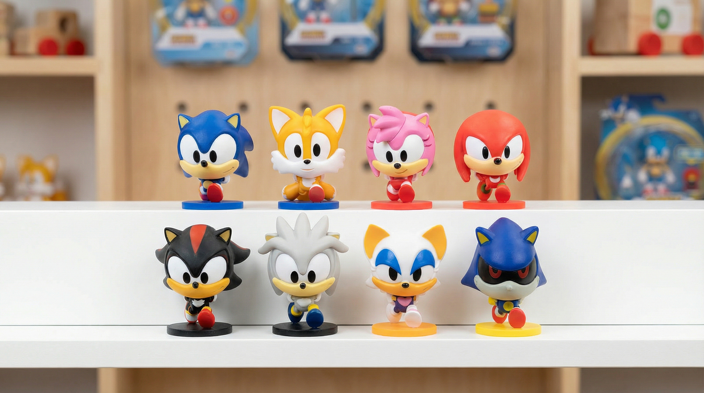

Sonic Super Teams
3D Sculpting • Prototyping • Retopology • Production Workflow • Manufacturing Preparation

The Project
For the Sonic Super Teams tabletop game released in Europe, I was responsible for the full creation of all character miniatures, from early 3D conception to production-ready assets, based on provided official model sheets. I sculpted the eight characters using 3D sculpting and 3D printing technologies, combining digital workflows with traditional art practices and molding know-how. Working from the supplied model sheets ensured strict visual consistency with the Sonic universe, while this hybrid approach guaranteed technical reliability for physical production. I also carried out the full retopology of all character meshes and handled the texturing work used to support the game's teaser and marketing visuals. The project covered the entire pipeline: prototyping, preparation for the molding factory, and optimization of the assets for portability across marketing and communication needs. This project highlights my ability to manage end-to-end 3D production for physical products, balancing artistic fidelity to established IP, technical constraints, and manufacturing requirements.